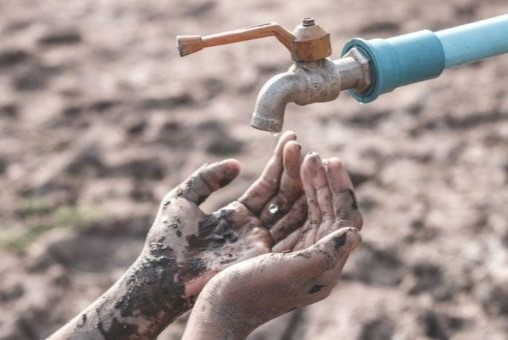

Rising Problems of Glacier Melting
Introduction: The Glaciers of Pakistan
- Pakistan hosts some of the largest glaciers outside the polar regions, mainly in the northern mountains.
- Accelerated by climate change, the rapid glacial melt increases the risk of flooding, impacts agriculture, and endangers communities that rely on these glaciers for fresh water.
- Fatality: The rising problem of glacier melting in Pakistan is a critical environmental issue driven by climate change. With over 7,000 glaciers, Pakistan faces increased risks of flooding, water shortages, and ecological disruption as its glaciers rapidly shrink

Melting Point: Impact of Rising Temperatures on Pakistan’s Glaciers
- Rising global temperatures accelerate the melting of Pakistan’s glaciers at an alarming rate.
- This rapid melting threatens freshwater resources and disrupts local ecosystems. Stats of high temperature in Gilgit, Pakistan
- Story: A few years ago, a team of scientists conducted a study in the Northern Areas of Pakistan, where they discovered alarming rates of glacier retreat. They interviewed local farmers who noticed decreased water flow in rivers that depended on glacier melt. One farmer, Gulzar, expressed concern that the changes would lead to crop failures and food insecurity. His story reflects the struggles faced by many communities that rely on these glaciers for their livelihoods.
Floods and Glacial Lake Outburst Floods (GLOFs)
- Melting glaciers create unstable glacial lakes.
- When these lakes burst, they cause catastrophic floods that threaten communities and infrastructure downstream.
- Story: In 2015, a small village in northern Pakistan was devastated by a GLOF after a sudden rise in temperature caused a nearby glacial lake to overflow. As villagers slept, a roaring sound echoed through the valley. By dawn, the torrent had destroyed homes and swept away crops.

Pakistan’s Water Crisis: A Looming Threat
- The decline of glaciers exacerbates Pakistan's existing water crisis, impacting agriculture and drinking water supply.
- Without proper management, the country faces severe water shortages in the future.
- Story: In a remote village in Punjab, an elderly woman named Fatima struggled to find water for her family as drought conditions worsened. Once dependent on the rivers fed by melting glaciers, her village now faced severe shortages. She often reminisced about the lush fields that surrounded her home, now parched and dry.
The Future: Climate Action for Pakistan
- Urgent climate action is needed to mitigate glacier melting impacts and ensure sustainable water management.
- This includes conservation policies, promoting renewable energy, and enhancing community resilience to climate change.
- Story: As Pakistan faced increasing climate challenges, a group of university students from Lahore decided to take action. They formed an environmental club called “Green Future” and organized a nationwide campaign to promote renewable energy solutions. Through workshops, they educated communities about solar energy and its benefits.